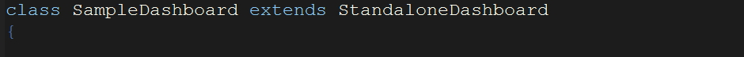

OK, now that we have learned how to setup a database connection and have an overview of the types of output we can get, let's look at how we can extend the built in classes provided by the library.
These three classes are extensions of a baseclass, Dashboard. We need to extend these classes as below:  SampleDashboard can be any name you choose but the original Razorflow class has to be one of the three above.